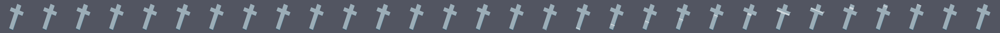

After years of studying at seminaries across Europe, I'm finally on my way back home to Kilross.

10
Finally home. Good to see the cat's doing well anyway.
Turns out uncle Joe had made some kind of deal with the devil that went south...
How to Play
1. Type the prayers before the timer runs out in order to exorcise the demons.
2. Every character of every Latin phrase must be typed accurately.
3. If you fail to type out the prayer in time, you'll become a puppet of beelzebub - bad craic.